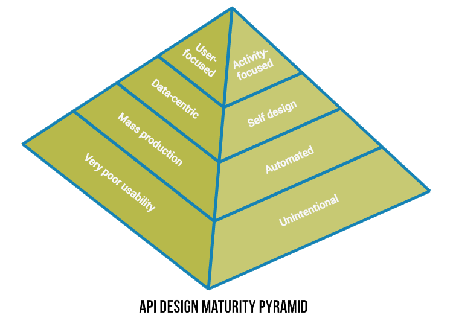

Introduction
When designing and building APIs, there are a lot of things to consider. Among these are security, media types, documentation, and versioning. These and a lot other concerns is what we address here, in order to offer comprehensible guidelines as to how to design APIs.
In these guidelines when referring to an API, we are referring to a web API, more specifically one delivered over HTTP.
Motivation
The motivation behind the API Guidelines is to define standards or "best practices" in order to:
- design robust and long-lasting APIs of high quality
- design APIs that are easy to understand and use
- have a consistent API "look and feel" across the board
- facilitate APIs as a Product
Thinking in Products
When creating APIs intended for use by someone else, whether it is actually sold or not, it can be thought of as a product.
This can be very easy to lose sight of, so before using the more specific advice on how to achieve successful APIs, keep these overall principles in mind:
-
Be customer-centric
Do not focus on data rather than customers. Rather focus on target developer's problems, by involving customers early in the design process. Make use of reviews and customers feedback, and provide service level support. Make APIs irresistible by having a high attention to API quality and client developer experience.

-
Treat every API as if it was a public API
Do not skip on usability and security when creating private or partner APIs, as this can make the transition into a public API difficult. Instead actively improve and maintain API consistency over the long term.
-
Componentize your systems
Identifying, breaking apart, and isolating small feature sets in big systems: can help innovation by creating platforms to enable other organizations to build new applications that better suit their needs; offers a higher degree of composability, which makes it possible to offer products as open systems instead of inflexible off-the-shelf solutions; may help monetize existing assets.
About These Guidelines
These guidelines are a work in progress, and is maintained by API Enablement Team during their initial work. Later teams are responsible to adhere to these guidelines during API design and development, and to continue to evolve these guidelines.*
What should we do when the guideline changes? Do existing APIs have to bed changed as well?
Conventions Used in These Guidelines
In these guidelines when referring to an API, we implicitly mean a web API delivered over HTTP. The terms: API, web API, and public API may be used interchangeably throughout these guidelines.
The following typographical conventions are used in these guidelines:
Constant width program listings, as well as within paragraphs to refer to URLs, mime types, HTTP methods, HTTP headers, and HTTP status codes.
Each section will usually be comprised of one or more lists of recommendations:
- DO to signify that you should do this.
- CONSIDER to signify that you should consider doing this.
- AVOID to signify that you should avoid doing this.
- DO NOT to signify that you should not do this.
Should we consider using the requirement level keywords "MUST", "SHOULD", etc., from RFC 2119 instead?